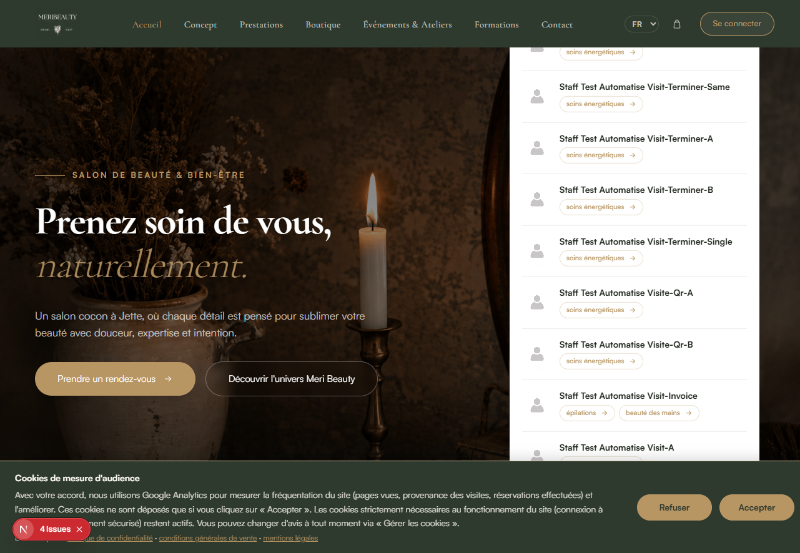
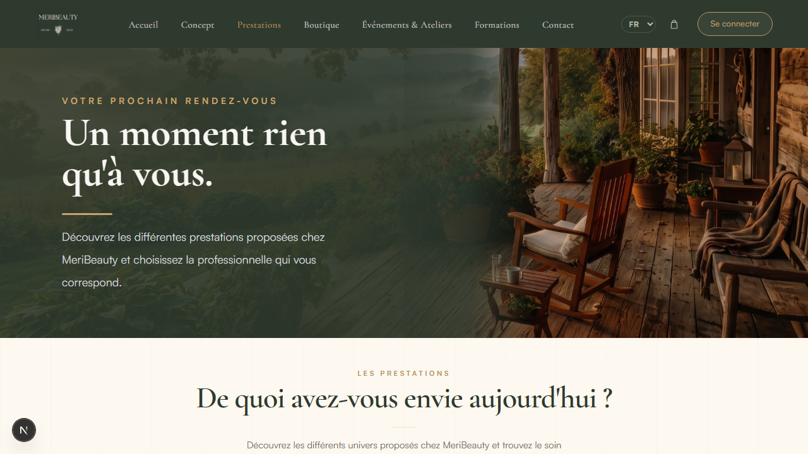
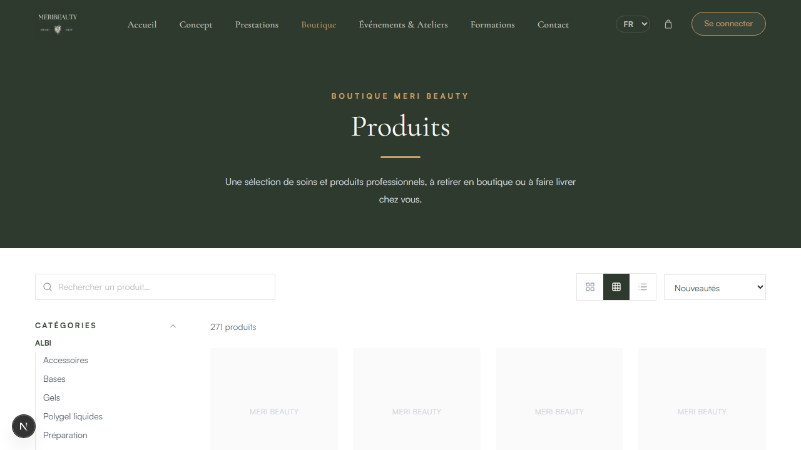
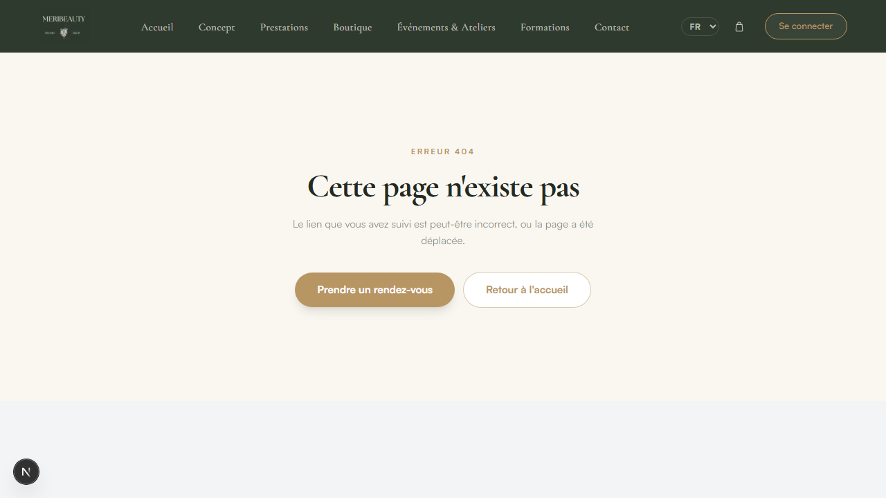

Corrections réalisées et preuves visuelles
État du travail sur la branche fix/audit-parcours-client, vérifié le 27 octobre 2026. Une mention « fait » indique une correction confirmée dans le code ; elle ne remplace pas une recette fonctionnelle ou une preuve visuelle.
Corrections réalisées
MB-002 · CGV et confidentialité
Les cases d'acceptation utilisent désormais des liens distincts vers les CGV et la politique de confidentialité, y compris dans le parcours de réservation.
MB-003 · Consentement cookies
Un bandeau propose Accepter ou Refuser. Google Analytics n'est chargé qu'après consentement et le pied de page offre « Gérer les cookies ».
MB-004 · Location de cabine
Le formulaire demande maintenant nom, prénom, e-mail et téléphone ; la TVA est facultative. L'API, l'e-mail et le tableau de bord ont été ajoutés.
MB-005 · Mentions dans la réservation rapide
Les liens juridiques restent accessibles dans la fenêtre de réservation rapide.
MB-008 / MB-012 · Langues, calendrier et corrections
Navigation, titres, catégories, calendrier et dates de réservation sont localisés ; les calendriers commencent le lundi et les champs mobiles utilisent une taille lisible.
MB-009 / MB-013 · Contenu public et 404
L'équipe de démonstration et les faux avis ont été retirés. Les profils staff invalides rendent désormais une vraie page 404 avec navigation.
Preuves visuelles disponibles




/staff/1 répond en 404. La capture laisse toutefois apparaître une zone basse grise ; le rendu complet du pied de page doit être contrôlé avant livraison.Preuves textuelles (code et validation)
| Élément | Preuve textuelle | Limite de preuve |
|---|---|---|
| MB-002 · CGV / confidentialité | components/reservation/steps/CustomerInfoStep.jsx et ReviewStep.jsx rendent la mention obligatoire via t.rich(...acceptTerms), avec deux liens distincts vers /cgv et /politique-de-confidentialite. | Présent dans le code ; pas de capture du parcours complet. |
| MB-004 · Location de cabine | components/website/BecomePartner.jsx définit les champs nom, prénom, e-mail et téléphone comme obligatoires. La TVA est validée uniquement lorsqu'elle est renseignée, et son libellé est « facultatif ». La migration 20261027120000_rental_request_contact_fields porte les champs côté base. | Migration appliquée localement ; déploiement production requis. |
| MB-005 · Réservation rapide | components/reservation/QuickBookingModal.jsx contient les liens legalFooterCgv et legalFooterPrivacy, pointant respectivement vers /cgv et la politique de confidentialité. | Présent dans le code ; pas de capture de la modale ouverte. |
| MB-008 · NL / EN | Les composants publics utilisent next-intl et les catalogues messages/fr.json, messages/nl.json et messages/en.json. Le contrôle automatisé de parité a retourné 0 missing, 0 extra pour NL et EN. | Les quatre captures existantes sont françaises ; aucune recette visuelle NL/EN n'est jointe. |
| MB-009 · Équipe publique | Le rendu public charge les données d'équipe depuis la base plutôt qu'une liste de démonstration en dur. | Non validé localement : la copie locale affiche encore des profils de test « Staff Test Automatise… ». Cet élément ne doit pas être présenté comme validé avant nettoyage des données ou contrôle de production. |
| MB-012 · Calendrier | components/formations/CustomDatePicker.jsx utilise une grille explicitement documentée « Monday-first grid ». Les champs concernés ont reçu une taille mobile lisible dans les composants de réservation. | Présent dans le code ; pas de capture du calendrier ni test sur appareil mobile joint. |
Localisation complémentaire réalisée
| Écran | Correction appliquée | Statut |
|---|---|---|
components/boutique/CheckoutPageClient.jsx | Facturation, TVA/VIES, compte, confirmation e-mail, récapitulatif et conditions sont affichés selon la langue. | FAIT |
components/website/ProfilePageClient.jsx | Profil, avis, adresse, TVA, identité de facturation et newsletter utilisent les messages fr/nl/en. | FAIT |
components/website/MonComptePageClient.jsx | Commandes, statuts, billets QR, annulations, avis, formations et états vides sont localisés. | FAIT |
components/customer/MyReservationsClient.jsx | Les états de demande d'exception, actions et messages associés utilisent les traductions fr/nl/en. | FAIT |
components/boutique/ReturnRequestClient.jsx | Le parcours de retour (motifs, recherches, délais, soumission et confirmation) est traduit en fr/nl/en. | FAIT |
Vérifications effectuées
- Build de production :
npm run buildréussi après la passe de localisation. - Vérification navigateur : les routes publiques ont été ouvertes localement ; les quatre captures de ce dossier montrent uniquement la version française.
- Contrôle des messages : parité des clés vérifiée entre
fr.json,nl.jsoneten.json. - Lint :
npm run lintterminé sans erreur ; les avertissements existants du projet restent présents. - Tests :
npm testn'est pas totalement vert dans cet environnement Windows (erreurs de création de workers Vitest et un test historique qui attend du texte français en dur).
Éléments techniques et de déploiement
- Implémentés dans le code, sans capture : préchargement des liens au survol, réduction de contenu d'administration dans le rendu visiteur, renommage d'images, favicon, politique de confidentialité, correctif du lien CGV de facture et correctif du calendrier fermé.
- Migration : la migration
20261027120000_rental_request_contact_fieldsest appliquée à la copie locale. Elle doit être déployée en production avecprisma migrate deploy. - Recette manuelle requise : checkout, compte, réservations, formulaire de cabine, consentement cookies, Google Maps et comportements mobiles nécessitent une validation sur l'environnement cible.
- À confirmer avec Marie : texte de consentement cookies, nécessité de redemander le consentement, carte Google Maps, affichage des salariées sur l'accueil et format de téléphone attendu.
- Hors périmètre de ce dossier : MB-001, MB-006, MB-007, MB-010 et MB-011 ne sont pas documentés par les captures reçues et ne doivent pas être présentés comme validés ici.
- Point restant :
AppointmentRescheduleModal.jsxdoit encore être vérifié pour le format d'heure en NL/EN.
Le serveur local utilisé pour les captures a été lancé avec JOBS_RUNNER=external et une valeur vide pour RESEND_API_KEY, afin de ne pas envoyer d'e-mails depuis la copie locale de production.